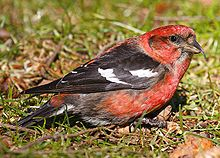
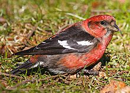

| Two-barred Crossbill | |
|---|---|
|  | |
| Male | |
| Conservation status | |
| Binomial name | |
| Loxia leucoptera Gmelin, 1789 |
| Two-barred Crossbill | |
|---|---|
|  | |
| Male | |
| Conservation status | |
| Binomial name | |
| Loxia leucoptera Gmelin, 1789 |
The Two-barred Crossbill (Loxia leucoptera), known as the White-winged Crossbill in North America, is a small passerine bird in the finch family Fringillidae. It has two subspecies, White-winged Crossbill Loxia leucoptera leucoptera in North America, and Two-barred Crossbill Loxia leucoptera bifasciata in NE Europe and N Asia.
This bird breeds in the coniferous forests of Alaska, Canada, northernmost USA and across Asia extending into northeast Europe. It nests in conifers, laying 3-5 eggs.
This crossbill is mainly resident, but will irregularly irrupt south if its food source fails. The American race seems to wander more frequently than the Eurasian subspecies. This species will form flocks outside the breeding season, often mixed with other crossbills. It is a rare visitor to western Europe, usually arriving with an eruption of Common Crossbills.
The crossbills are characterised by the mandibles crossing at their tips, which gives the group its English name. They are specialist feeders on conifer cones, and the unusual bill shape is an adaptation to assist the extraction of the seeds from the cone. Two-barred Crossbill has a strong preference for larch (Larix), in Eurasia using Siberian larch (Larix sibirica) and Dahurian larch (L. gmelinii), and in North America Tamarack larch (L. laricina). It will also take Rowan Sorbus berries, and in North America, also Eastern Hemlock (Tsuga canadensis) and White spruce (Picea glauca) cones.
Adult males tend to be red or pinkish in colour, and females green or yellow, but there is much variation. Two-barred is easier to identify than other crossbills, especially in North America, where only Red Crossbill and this species occur, but some care is still needed.
Within its Eurasian range, this species is smaller-headed and smaller-billed than Parrot Crossbill and Scottish Crossbill, so the main confusion species both there and in North America is Common or Red Crossbill.
The main plumage distinction from Common Crossbills is the white wingbars which give this species its English and scientific names. There are also white tips to the tertials. The adult male is also a somewhat brighter (pinker) red than other male crossbills. Some Common Crossbills occasionally show weak white wingbars, so care is needed with the correct identification of this species. The chip call is weaker and higher than that of Common Crossbill.
Another crossbill on Hispaniola was previously treated as a subspecies, Loxia leucoptera megaplaga, but is now treated as a distinct species, Hispaniolan Crossbill, Loxia megaplaga. It is associated with the Hispaniolan pine Pinus occidentalis, and differs from Two-barred Crossbill in darker plumage and a stouter bill.

{kind=link}
{kind=link}